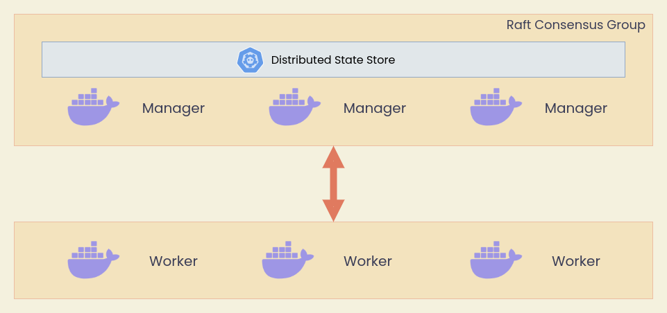

Docker Swarm
Built in container orchestration
docker composeทำงานบน Server เครื่องเดียวdocker swarmทำงานเป็น Cluster (Server หลายเครื่อง) ผ่าน Overlay Network
Swarm Architecture

อ่านเพิ่มเติม
Swarm Init
เริ่มใช้งาน Docker Swarm ได้ด้วยคำสั่ง
จะเห็น Output
Swarm initialized: current node (w5rj9pqmcv0z2b052f8dr0qd2) is now a manager.
To add a worker to this swarm, run the following command:
docker swarm join --token SWMTKN-1-6aq8xeo72o9kj5orlbzglt66fpxtw1dlmkb9djkgsatmpw8ugi-2jgc0rqmq2b5aet51dl89qbbz 192.168.1.77:2377
To add a manager to this swarm, run 'docker swarm join-token manager' and follow the instructions.
สิ่งสำคัญคือ
docker swarm initคือการสร้าง Manager Node แรกของ Swarm- เราสามารถใช้คำสั่งตาม Output เพื่อเพิ่ม Manager หรือเพิ่ม Worker ได้
- หลังจาก Init แล้วเราจะสามารถใช้คำสั่ง
docker service <sub-command>ในการรัน Container
Creating Manager Nodes
Copy คำสั่งที่คายออกมาจาก Swarm Initialization ระวังเรื่อง IP Address เนื่องจากจะเปลี่ยนแปลงตามเครื่องที่เราทำการ Initialize Swarm
หากใช้ Play with Docker ให้กดปุ่ม ctrl + insert เพื่อ Copy และ shift + insert เพื่อ Paste
docker swarm join --token SWMTKN-1-6aq8xeo72o9kj5orlbzglt66fpxtw1dlmkb9djkgsatmpw8ugi-2jgc0rqmq2b5aet51dl89qbbz 192.168.1.77:2377
Creating Worker Nodes
พิมพ์คำสั่งที่เครื่อง Manager
แล้ว Copy Output ไปใส่ในเครื่องที่ต้องการให้เป็น Manager Node
Swarm Nodes
ตรวจสอบ Swarm Nodes ได้ด้วยคำสั่ง
Deploy Services
ทดลอง Deploy Services Elastic Search v2
ทดลองเข้า Browser ที่ docker_nodes_ip:9200 ใช้ IP ของ Manager หรือ Worker ก็ได้ ทดลอง Refresh หลายๆครั้งจะเห็นว่า Docker ทำ Load Balancing สำหรับ Service ใน Overlay Network ให้อัตโนมัติ
Managing Services
List Services
List Logs
Scale Services
Remove Services
Docker Stacks
Stacks คล้ายๆกับ Compose แต่ทำงานอยู่บน Cluster แทนที่จะทำงานบนเครื่อง Server ตัวเดียว มองง่ายๆว่าเป็นกลุ่มของ Services สามารถใช้ Compose File ในการ Deploy ได้ ตัวอย่างการ Deploy Docker Stack ของ Portainer
สร้างไฟล์ชื่อ portainer-agent-stack.yml และ Copy ด้านล่าง
version: '3.7'
services:
agent:
image: portainer/agent:2.11.1
volumes:
- /var/run/docker.sock:/var/run/docker.sock
- /var/lib/docker/volumes:/var/lib/docker/volumes
networks:
- agent_network
deploy:
mode: global
placement:
constraints: [node.platform.os == linux]
portainer:
image: portainer/portainer-ce:2.11.1
command: -H tcp://tasks.agent:9001 --tlsskipverify
ports:
- "9443:9443"
- "9000:9000"
- "8000:8000"
volumes:
- portainer_data:/data
networks:
- agent_network
deploy:
mode: replicated
replicas: 1
placement:
constraints: [node.role == manager]
networks:
agent_network:
driver: overlay
attachable: true
volumes:
portainer_data:
Deploy a Stack
List Stacks
List Services in a Stack
Remove a Stack
จากนั้นทดลองใช้งานโดยการเข้าไปที่ docker_nodes_ip:9000 เพื่อดู Portainer UI
ในงาน Data Engineering ของเราจะไม่ค่อยได้ใช้ Docker Swarm เราจะไปหนัก Kubernetes มากกว่า แต่ในกรณีที่ต้องการทดสอบ Technology ไวๆ ส่วนใหญ่จะวนๆแถว Docker ก่อนที่จะไปเท Infrastructure จริงบน Kubernetes